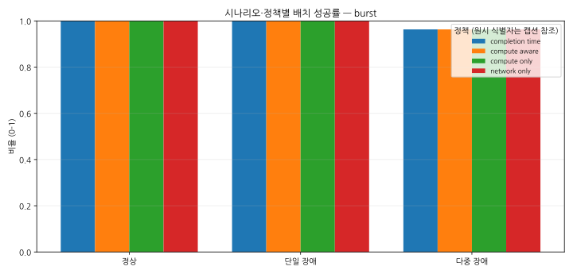
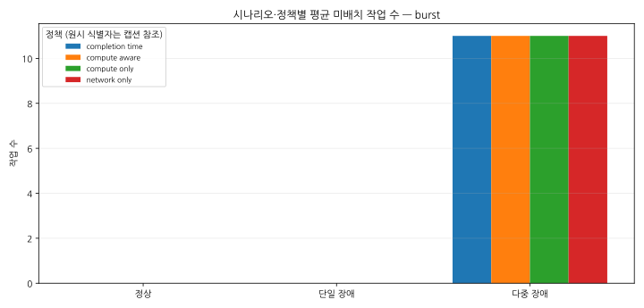
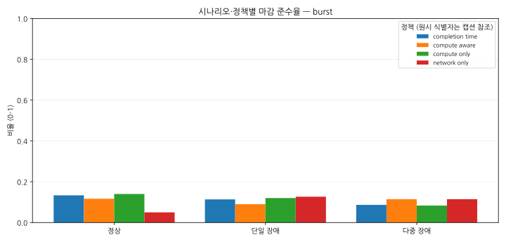
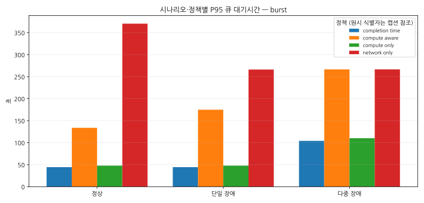
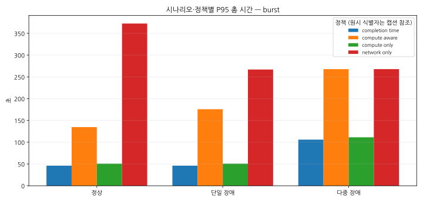
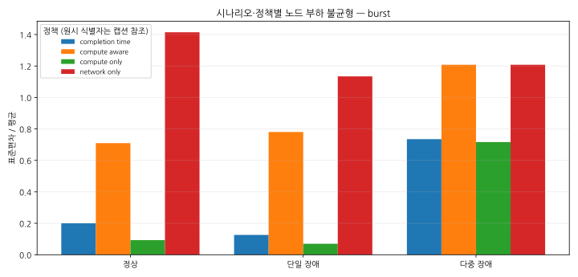
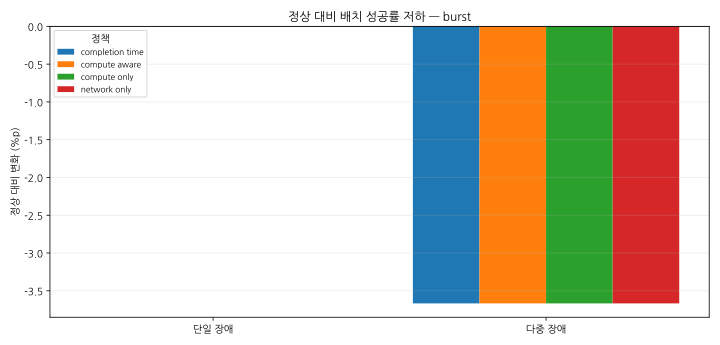

우주 AI 데이터센터 결정적 배치 실험 보고서
발표용 핵심 결과
- 단일 장애 조건에서 completion_time 정책의 배치 성공률은(는) 정상 대비 +0.00%p 변화했습니다.
- 단일 장애 조건에서 completion_time 정책의 평균 미배치 작업 수은(는) 정상 대비 절대 변화 +0, 상대 변화 계산 불가(정상 기준 0) 변화했습니다.
- 단일 장애 조건에서 completion_time 정책의 마감 준수율은(는) 정상 대비 -2.00%p 변화했습니다.
- 단일 장애 조건에서 completion_time 정책의 평균 큐 대기시간은(는) 정상 대비 +0.32% 변화했습니다.
- 단일 장애 조건에서 completion_time 정책의 P95 큐 대기시간은(는) 정상 대비 +0.00% 변화했습니다.
방법론
결과는 명시적 시드를 사용한 반복 결정적 시뮬레이션에서 생성되었습니다. 집계는 summary.csv, 실행 검증은 runs.csv, 기존 평가 순위는 policy_ranking.csv를 사용했습니다.
- 백분위수: nearest-rank (ceil(p*n), minimum rank 1)
- 표준편차: sample standard deviation (n-1); null for fewer than 2 values
- 순위: 배치 성공률↓, 마감 준수율↓, 미배치 수↑, P95 총 시간↑, 노드 부하 불균형↑의 기존 사전식 평가 규칙이며 AI 의사결정 규칙이 아닙니다.
전체 비교
| 시나리오 | 워크로드 | 정책 | 배치 성공률 | 평균 미배치 작업 수 | 마감 준수율 | 평균 큐 대기시간 | P95 큐 대기시간 | 평균 총 시간 | P95 총 시간 | 노드 부하 불균형 |
|---|---|---|---|---|---|---|---|---|---|---|
| 다중 장애 | burst | completion_time | 0.9633 | 11 | 0.0865 | 55.29 | 104.1 | 57.05 | 105.9 | 0.7346 |
| 다중 장애 | burst | compute_aware | 0.9633 | 11 | 0.1142 | 120 | 266.5 | 121.7 | 267.8 | 1.208 |
| 다중 장애 | burst | compute_only | 0.9633 | 11 | 0.0830 | 55.34 | 110.2 | 57.12 | 111.3 | 0.7163 |
| 다중 장애 | burst | network_only | 0.9633 | 11 | 0.1142 | 120 | 266.5 | 121.7 | 267.8 | 1.208 |
| 정상 | burst | completion_time | 1.0000 | 0 | 0.1333 | 22.42 | 44.39 | 24.28 | 46.13 | 0.2002 |
| 정상 | burst | compute_aware | 1.0000 | 0 | 0.1167 | 54.65 | 133.7 | 56.43 | 134.7 | 0.7094 |
| 정상 | burst | compute_only | 1.0000 | 0 | 0.1400 | 22.47 | 47.85 | 24.37 | 50.67 | 0.09274 |
| 정상 | burst | network_only | 1.0000 | 0 | 0.0500 | 186.8 | 370.4 | 188.8 | 372.4 | 1.414 |
| 단일 장애 | burst | completion_time | 1.0000 | 0 | 0.1133 | 22.49 | 44.39 | 24.37 | 46.13 | 0.1257 |
| 단일 장애 | burst | compute_aware | 1.0000 | 0 | 0.0900 | 67.89 | 174.9 | 69.61 | 175.8 | 0.7803 |
| 단일 장애 | burst | compute_only | 1.0000 | 0 | 0.1200 | 22.54 | 47.85 | 24.44 | 50.68 | 0.06976 |
| 단일 장애 | burst | network_only | 1.0000 | 0 | 0.1267 | 115.7 | 266.1 | 117.3 | 266.8 | 1.134 |
시나리오별 정책 순위
| 시나리오 | 워크로드 | 순위 | 정책 |
|---|---|---|---|
| 다중 장애 | burst | 1 | compute_aware |
| 다중 장애 | burst | 2 | network_only |
| 다중 장애 | burst | 3 | completion_time |
| 다중 장애 | burst | 4 | compute_only |
| 정상 | burst | 1 | compute_only |
| 정상 | burst | 2 | completion_time |
| 정상 | burst | 3 | compute_aware |
| 정상 | burst | 4 | network_only |
| 단일 장애 | burst | 1 | network_only |
| 단일 장애 | burst | 2 | compute_only |
| 단일 장애 | burst | 3 | completion_time |
| 단일 장애 | burst | 4 | compute_aware |
정상 대비 저하
비율 지표는 퍼센트포인트, 나머지는 정상 기준 백분율 변화로 표시하며 0 기준은 상대 변화 계산 불가로 둡니다.
| 시나리오 | 워크로드 | 정책 | 지표 | 정상 | 비교 | 절대 변화 | 상대 변화 |
|---|---|---|---|---|---|---|---|
| 단일 장애 | burst | completion_time | 배치 성공률 | 1.0000 | 1.0000 | +0.00%p | 계산 불가 |
| 단일 장애 | burst | completion_time | 평균 미배치 작업 수 | 0 | 0 | 0 | 계산 불가 |
| 단일 장애 | burst | completion_time | 마감 준수율 | 0.1333 | 0.1133 | -2.00%p | 계산 불가 |
| 단일 장애 | burst | completion_time | 평균 큐 대기시간 | 22.42 | 22.49 | 0.07073 | +0.32% |
| 단일 장애 | burst | completion_time | P95 큐 대기시간 | 44.39 | 44.39 | 0 | +0.00% |
| 단일 장애 | burst | completion_time | 평균 총 시간 | 24.28 | 24.37 | 0.09028 | +0.37% |
| 단일 장애 | burst | completion_time | P95 총 시간 | 46.13 | 46.13 | 0 | +0.00% |
| 단일 장애 | burst | completion_time | 노드 부하 불균형 | 0.2002 | 0.1257 | -0.07447 | -37.20% |
| 단일 장애 | burst | compute_aware | 배치 성공률 | 1.0000 | 1.0000 | +0.00%p | 계산 불가 |
| 단일 장애 | burst | compute_aware | 평균 미배치 작업 수 | 0 | 0 | 0 | 계산 불가 |
| 단일 장애 | burst | compute_aware | 마감 준수율 | 0.1167 | 0.0900 | -2.67%p | 계산 불가 |
| 단일 장애 | burst | compute_aware | 평균 큐 대기시간 | 54.65 | 67.89 | 13.24 | +24.23% |
| 단일 장애 | burst | compute_aware | P95 큐 대기시간 | 133.7 | 174.9 | 41.17 | +30.79% |
| 단일 장애 | burst | compute_aware | 평균 총 시간 | 56.43 | 69.61 | 13.18 | +23.36% |
| 단일 장애 | burst | compute_aware | P95 총 시간 | 134.7 | 175.8 | 41.1 | +30.52% |
| 단일 장애 | burst | compute_aware | 노드 부하 불균형 | 0.7094 | 0.7803 | 0.07089 | +9.99% |
| 단일 장애 | burst | compute_only | 배치 성공률 | 1.0000 | 1.0000 | +0.00%p | 계산 불가 |
| 단일 장애 | burst | compute_only | 평균 미배치 작업 수 | 0 | 0 | 0 | 계산 불가 |
| 단일 장애 | burst | compute_only | 마감 준수율 | 0.1400 | 0.1200 | -2.00%p | 계산 불가 |
| 단일 장애 | burst | compute_only | 평균 큐 대기시간 | 22.47 | 22.54 | 0.0707 | +0.31% |
| 단일 장애 | burst | compute_only | P95 큐 대기시간 | 47.85 | 47.85 | 0 | +0.00% |
| 단일 장애 | burst | compute_only | 평균 총 시간 | 24.37 | 24.44 | 0.07464 | +0.31% |
| 단일 장애 | burst | compute_only | P95 총 시간 | 50.67 | 50.68 | 0.00775 | +0.02% |
| 단일 장애 | burst | compute_only | 노드 부하 불균형 | 0.09274 | 0.06976 | -0.02297 | -24.77% |
| 단일 장애 | burst | network_only | 배치 성공률 | 1.0000 | 1.0000 | +0.00%p | 계산 불가 |
| 단일 장애 | burst | network_only | 평균 미배치 작업 수 | 0 | 0 | 0 | 계산 불가 |
| 단일 장애 | burst | network_only | 마감 준수율 | 0.0500 | 0.1267 | +7.67%p | 계산 불가 |
| 단일 장애 | burst | network_only | 평균 큐 대기시간 | 186.8 | 115.7 | -71.16 | -38.09% |
| 단일 장애 | burst | network_only | P95 큐 대기시간 | 370.4 | 266.1 | -104.3 | -28.16% |
| 단일 장애 | burst | network_only | 평균 총 시간 | 188.8 | 117.3 | -71.43 | -37.84% |
| 단일 장애 | burst | network_only | P95 총 시간 | 372.4 | 266.8 | -105.6 | -28.35% |
| 단일 장애 | burst | network_only | 노드 부하 불균형 | 1.414 | 1.134 | -0.2805 | -19.83% |
| 다중 장애 | burst | completion_time | 배치 성공률 | 1.0000 | 0.9633 | -3.67%p | 계산 불가 |
| 다중 장애 | burst | completion_time | 평균 미배치 작업 수 | 0 | 11 | 11 | 계산 불가 |
| 다중 장애 | burst | completion_time | 마감 준수율 | 0.1333 | 0.0865 | -4.68%p | 계산 불가 |
| 다중 장애 | burst | completion_time | 평균 큐 대기시간 | 22.42 | 55.29 | 32.87 | +146.58% |
| 다중 장애 | burst | completion_time | P95 큐 대기시간 | 44.39 | 104.1 | 59.7 | +134.47% |
| 다중 장애 | burst | completion_time | 평균 총 시간 | 24.28 | 57.05 | 32.77 | +134.96% |
| 다중 장애 | burst | completion_time | P95 총 시간 | 46.13 | 105.9 | 59.81 | +129.66% |
| 다중 장애 | burst | completion_time | 노드 부하 불균형 | 0.2002 | 0.7346 | 0.5345 | +267.01% |
| 다중 장애 | burst | compute_aware | 배치 성공률 | 1.0000 | 0.9633 | -3.67%p | 계산 불가 |
| 다중 장애 | burst | compute_aware | 평균 미배치 작업 수 | 0 | 11 | 11 | 계산 불가 |
| 다중 장애 | burst | compute_aware | 마감 준수율 | 0.1167 | 0.1142 | -0.25%p | 계산 불가 |
| 다중 장애 | burst | compute_aware | 평균 큐 대기시간 | 54.65 | 120 | 65.37 | +119.62% |
| 다중 장애 | burst | compute_aware | P95 큐 대기시간 | 133.7 | 266.5 | 132.8 | +99.35% |
| 다중 장애 | burst | compute_aware | 평균 총 시간 | 56.43 | 121.7 | 65.23 | +115.60% |
| 다중 장애 | burst | compute_aware | P95 총 시간 | 134.7 | 267.8 | 133.1 | +98.83% |
| 다중 장애 | burst | compute_aware | 노드 부하 불균형 | 0.7094 | 1.208 | 0.4982 | +70.23% |
| 다중 장애 | burst | compute_only | 배치 성공률 | 1.0000 | 0.9633 | -3.67%p | 계산 불가 |
| 다중 장애 | burst | compute_only | 평균 미배치 작업 수 | 0 | 11 | 11 | 계산 불가 |
| 다중 장애 | burst | compute_only | 마감 준수율 | 0.1400 | 0.0830 | -5.70%p | 계산 불가 |
| 다중 장애 | burst | compute_only | 평균 큐 대기시간 | 22.47 | 55.34 | 32.87 | +146.29% |
| 다중 장애 | burst | compute_only | P95 큐 대기시간 | 47.85 | 110.2 | 62.34 | +130.28% |
| 다중 장애 | burst | compute_only | 평균 총 시간 | 24.37 | 57.12 | 32.75 | +134.42% |
| 다중 장애 | burst | compute_only | P95 총 시간 | 50.67 | 111.3 | 60.59 | +119.56% |
| 다중 장애 | burst | compute_only | 노드 부하 불균형 | 0.09274 | 0.7163 | 0.6236 | +672.41% |
| 다중 장애 | burst | network_only | 배치 성공률 | 1.0000 | 0.9633 | -3.67%p | 계산 불가 |
| 다중 장애 | burst | network_only | 평균 미배치 작업 수 | 0 | 11 | 11 | 계산 불가 |
| 다중 장애 | burst | network_only | 마감 준수율 | 0.0500 | 0.1142 | +6.42%p | 계산 불가 |
| 다중 장애 | burst | network_only | 평균 큐 대기시간 | 186.8 | 120 | -66.83 | -35.77% |
| 다중 장애 | burst | network_only | P95 큐 대기시간 | 370.4 | 266.5 | -103.9 | -28.05% |
| 다중 장애 | burst | network_only | 평균 총 시간 | 188.8 | 121.7 | -67.11 | -35.55% |
| 다중 장애 | burst | network_only | P95 총 시간 | 372.4 | 267.8 | -104.7 | -28.10% |
| 다중 장애 | burst | network_only | 노드 부하 불균형 | 1.414 | 1.208 | -0.2066 | -14.61% |
핵심 발견
- F0001 단일 장애 조건에서 completion_time 정책의 배치 성공률은(는) 정상 대비 +0.00%p 변화했습니다. (관측 결과)
- F0002 단일 장애 조건에서 completion_time 정책의 평균 미배치 작업 수은(는) 정상 대비 절대 변화 +0, 상대 변화 계산 불가(정상 기준 0) 변화했습니다. (관측 결과)
- F0003 단일 장애 조건에서 completion_time 정책의 마감 준수율은(는) 정상 대비 -2.00%p 변화했습니다. (관측 결과)
- F0004 단일 장애 조건에서 completion_time 정책의 평균 큐 대기시간은(는) 정상 대비 +0.32% 변화했습니다. (관측 결과)
- F0005 단일 장애 조건에서 completion_time 정책의 P95 큐 대기시간은(는) 정상 대비 +0.00% 변화했습니다. (관측 결과)
- F0006 단일 장애 조건에서 completion_time 정책의 평균 총 시간은(는) 정상 대비 +0.37% 변화했습니다. (관측 결과)
- F0007 단일 장애 조건에서 completion_time 정책의 P95 총 시간은(는) 정상 대비 +0.00% 변화했습니다. (관측 결과)
- F0008 단일 장애 조건에서 completion_time 정책의 노드 부하 불균형은(는) 정상 대비 -37.20% 변화했습니다. (관측 결과)
- F0009 단일 장애 조건에서 compute_aware 정책의 배치 성공률은(는) 정상 대비 +0.00%p 변화했습니다. (관측 결과)
- F0010 단일 장애 조건에서 compute_aware 정책의 평균 미배치 작업 수은(는) 정상 대비 절대 변화 +0, 상대 변화 계산 불가(정상 기준 0) 변화했습니다. (관측 결과)
- F0011 단일 장애 조건에서 compute_aware 정책의 마감 준수율은(는) 정상 대비 -2.67%p 변화했습니다. (관측 결과)
- F0012 단일 장애 조건에서 compute_aware 정책의 평균 큐 대기시간은(는) 정상 대비 +24.23% 변화했습니다. (관측 결과)
- F0013 단일 장애 조건에서 compute_aware 정책의 P95 큐 대기시간은(는) 정상 대비 +30.79% 변화했습니다. (관측 결과)
- F0014 단일 장애 조건에서 compute_aware 정책의 평균 총 시간은(는) 정상 대비 +23.36% 변화했습니다. (관측 결과)
- F0015 단일 장애 조건에서 compute_aware 정책의 P95 총 시간은(는) 정상 대비 +30.52% 변화했습니다. (관측 결과)
- F0016 단일 장애 조건에서 compute_aware 정책의 노드 부하 불균형은(는) 정상 대비 +9.99% 변화했습니다. (관측 결과)
- F0017 단일 장애 조건에서 compute_only 정책의 배치 성공률은(는) 정상 대비 +0.00%p 변화했습니다. (관측 결과)
- F0018 단일 장애 조건에서 compute_only 정책의 평균 미배치 작업 수은(는) 정상 대비 절대 변화 +0, 상대 변화 계산 불가(정상 기준 0) 변화했습니다. (관측 결과)
- F0019 단일 장애 조건에서 compute_only 정책의 마감 준수율은(는) 정상 대비 -2.00%p 변화했습니다. (관측 결과)
- F0020 단일 장애 조건에서 compute_only 정책의 평균 큐 대기시간은(는) 정상 대비 +0.31% 변화했습니다. (관측 결과)
- F0021 단일 장애 조건에서 compute_only 정책의 P95 큐 대기시간은(는) 정상 대비 +0.00% 변화했습니다. (관측 결과)
- F0022 단일 장애 조건에서 compute_only 정책의 평균 총 시간은(는) 정상 대비 +0.31% 변화했습니다. (관측 결과)
- F0023 단일 장애 조건에서 compute_only 정책의 P95 총 시간은(는) 정상 대비 +0.02% 변화했습니다. (관측 결과)
- F0024 단일 장애 조건에서 compute_only 정책의 노드 부하 불균형은(는) 정상 대비 -24.77% 변화했습니다. (관측 결과)
- F0025 단일 장애 조건에서 network_only 정책의 배치 성공률은(는) 정상 대비 +0.00%p 변화했습니다. (관측 결과)
- F0026 단일 장애 조건에서 network_only 정책의 평균 미배치 작업 수은(는) 정상 대비 절대 변화 +0, 상대 변화 계산 불가(정상 기준 0) 변화했습니다. (관측 결과)
- F0027 단일 장애 조건에서 network_only 정책의 마감 준수율은(는) 정상 대비 +7.67%p 변화했습니다. (관측 결과)
- F0028 단일 장애 조건에서 network_only 정책의 평균 큐 대기시간은(는) 정상 대비 -38.09% 변화했습니다. (관측 결과)
- F0029 단일 장애 조건에서 network_only 정책의 P95 큐 대기시간은(는) 정상 대비 -28.16% 변화했습니다. (관측 결과)
- F0030 단일 장애 조건에서 network_only 정책의 평균 총 시간은(는) 정상 대비 -37.84% 변화했습니다. (관측 결과)
- F0031 단일 장애 조건에서 network_only 정책의 P95 총 시간은(는) 정상 대비 -28.35% 변화했습니다. (관측 결과)
- F0032 단일 장애 조건에서 network_only 정책의 노드 부하 불균형은(는) 정상 대비 -19.83% 변화했습니다. (관측 결과)
- F0033 다중 장애 조건에서 completion_time 정책의 배치 성공률은(는) 정상 대비 -3.67%p 변화했습니다. (관측 결과)
- F0034 다중 장애 조건에서 completion_time 정책의 평균 미배치 작업 수은(는) 정상 대비 절대 변화 +11, 상대 변화 계산 불가(정상 기준 0) 변화했습니다. (관측 결과)
- F0035 다중 장애 조건에서 completion_time 정책의 마감 준수율은(는) 정상 대비 -4.68%p 변화했습니다. (관측 결과)
- F0036 다중 장애 조건에서 completion_time 정책의 평균 큐 대기시간은(는) 정상 대비 +146.58% 변화했습니다. (관측 결과)
- F0037 다중 장애 조건에서 completion_time 정책의 P95 큐 대기시간은(는) 정상 대비 +134.47% 변화했습니다. (관측 결과)
- F0038 다중 장애 조건에서 completion_time 정책의 평균 총 시간은(는) 정상 대비 +134.96% 변화했습니다. (관측 결과)
- F0039 다중 장애 조건에서 completion_time 정책의 P95 총 시간은(는) 정상 대비 +129.66% 변화했습니다. (관측 결과)
- F0040 다중 장애 조건에서 completion_time 정책의 노드 부하 불균형은(는) 정상 대비 +267.01% 변화했습니다. (관측 결과)
- F0041 다중 장애 조건에서 compute_aware 정책의 배치 성공률은(는) 정상 대비 -3.67%p 변화했습니다. (관측 결과)
- F0042 다중 장애 조건에서 compute_aware 정책의 평균 미배치 작업 수은(는) 정상 대비 절대 변화 +11, 상대 변화 계산 불가(정상 기준 0) 변화했습니다. (관측 결과)
- F0043 다중 장애 조건에서 compute_aware 정책의 마감 준수율은(는) 정상 대비 -0.25%p 변화했습니다. (관측 결과)
- F0044 다중 장애 조건에서 compute_aware 정책의 평균 큐 대기시간은(는) 정상 대비 +119.62% 변화했습니다. (관측 결과)
- F0045 다중 장애 조건에서 compute_aware 정책의 P95 큐 대기시간은(는) 정상 대비 +99.35% 변화했습니다. (관측 결과)
- F0046 다중 장애 조건에서 compute_aware 정책의 평균 총 시간은(는) 정상 대비 +115.60% 변화했습니다. (관측 결과)
- F0047 다중 장애 조건에서 compute_aware 정책의 P95 총 시간은(는) 정상 대비 +98.83% 변화했습니다. (관측 결과)
- F0048 다중 장애 조건에서 compute_aware 정책의 노드 부하 불균형은(는) 정상 대비 +70.23% 변화했습니다. (관측 결과)
- F0049 다중 장애 조건에서 compute_only 정책의 배치 성공률은(는) 정상 대비 -3.67%p 변화했습니다. (관측 결과)
- F0050 다중 장애 조건에서 compute_only 정책의 평균 미배치 작업 수은(는) 정상 대비 절대 변화 +11, 상대 변화 계산 불가(정상 기준 0) 변화했습니다. (관측 결과)
- F0051 다중 장애 조건에서 compute_only 정책의 마감 준수율은(는) 정상 대비 -5.70%p 변화했습니다. (관측 결과)
- F0052 다중 장애 조건에서 compute_only 정책의 평균 큐 대기시간은(는) 정상 대비 +146.29% 변화했습니다. (관측 결과)
- F0053 다중 장애 조건에서 compute_only 정책의 P95 큐 대기시간은(는) 정상 대비 +130.28% 변화했습니다. (관측 결과)
- F0054 다중 장애 조건에서 compute_only 정책의 평균 총 시간은(는) 정상 대비 +134.42% 변화했습니다. (관측 결과)
- F0055 다중 장애 조건에서 compute_only 정책의 P95 총 시간은(는) 정상 대비 +119.56% 변화했습니다. (관측 결과)
- F0056 다중 장애 조건에서 compute_only 정책의 노드 부하 불균형은(는) 정상 대비 +672.41% 변화했습니다. (관측 결과)
- F0057 다중 장애 조건에서 network_only 정책의 배치 성공률은(는) 정상 대비 -3.67%p 변화했습니다. (관측 결과)
- F0058 다중 장애 조건에서 network_only 정책의 평균 미배치 작업 수은(는) 정상 대비 절대 변화 +11, 상대 변화 계산 불가(정상 기준 0) 변화했습니다. (관측 결과)
- F0059 다중 장애 조건에서 network_only 정책의 마감 준수율은(는) 정상 대비 +6.42%p 변화했습니다. (관측 결과)
- F0060 다중 장애 조건에서 network_only 정책의 평균 큐 대기시간은(는) 정상 대비 -35.77% 변화했습니다. (관측 결과)
- F0061 다중 장애 조건에서 network_only 정책의 P95 큐 대기시간은(는) 정상 대비 -28.05% 변화했습니다. (관측 결과)
- F0062 다중 장애 조건에서 network_only 정책의 평균 총 시간은(는) 정상 대비 -35.55% 변화했습니다. (관측 결과)
- F0063 다중 장애 조건에서 network_only 정책의 P95 총 시간은(는) 정상 대비 -28.10% 변화했습니다. (관측 결과)
- F0064 다중 장애 조건에서 network_only 정책의 노드 부하 불균형은(는) 정상 대비 -14.61% 변화했습니다. (관측 결과)
행렬 완전성
누락된 실행 조합이 없습니다.
실패 실행
실패 실행이 없습니다.
그림







한계
- 물리 위성 배치가 아닌 시뮬레이션입니다.
- 저장된 시나리오 토폴로지와 워크로드 가정에 의존합니다.
- 실제 위성 하드웨어 에너지 소비를 측정하지 않았습니다.
- 동적 물리 링크 복구 시간은 구현되어 있지 않습니다.
- 강화학습 정책은 구현되어 있지 않습니다.
- 결과는 평가된 시나리오 행렬에 의존하며 자동 해석은 인과 설명이 아닙니다.